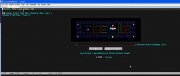

I avoided using Microsoft Windows for almost 15 years, but with my
new job at a Microsoft-enthralled development shop, those idyllic
days have come to an abrupt end. Because in the past I could always
use my trusty Linux and OS X machines, I never did push past the
hurdles of using Emacs on Windows. My utter reliance on Org-mode,
TRAMP, and Ediff (to name a few) made it essential to get Emacs
working on Windows if at all possible.
Now I am using Emacs on Windows XP and Windows 7 on a daily basis,
and am quite happy with the results. It was not easy to get to the
point of full functionality, so I wanted to share the magic that
makes it all work.
I have decided against using the Cygwin Emacs package for several reasons:
- Running a windowed/multi-frame/pretty version requires running
Cygwin-X, which is quite a lot of overhead just to run Emacs. I
have had a few interface and display problems lately with Cygwin-X
also. - Cool-though-seldom-used features that work in the native port do
not work in the Cygwin port: Window opacity control, for example - Using the native port means I can always be running the latest
released version from gnu.org - The native port just runs faster
On the other hand, Cygwin does play a crucial role in making the
native Emacs port work properly. I have tried and hated using PuTTY
and Plink, and various one-off ports of standard Unix commands.
Using Cygwin and its package management makes all this
much simpler and more reliable.
So all the hints given here use the “official” Emacs for Windows
(sometimes referred to as NTEmacs), as well as Cygwin (with no
dependency on Cygwin-X).
I really hope this helps some poor beleaguered Linux/OS X Emacs user
make the giant backwards leap. With these tips and little helpers like
Launchy, you won’t even have to
acknowledge that you’re running Windows!
Software download links
Here’s where you will find all the software referenced in the tips:
- Emacs for Windows
- Cygwin
- GnuWin32 for image libraries
- ISpell package
- Maxframe.el
- GSView
Tip #1: General Usage
- Execute runemacs.exe or emacsclientw.exe. On your Linux and OS X
systems, the binary names or emacs and emacsclient: just use the
windows-specific wrappers included in the standard port when on MS Windows. - Add Cygwin /bin to exec-path.
(if (file-directory-p "c:/cygwin/bin") (add-to-list 'exec-path "c:/cygwin/bin"))
Tip #2: Make TRAMP work nicely — and without PuTTY
There are people using PuTTY and Plink.exe to get this working, but
I like using good old OpenSSH much better: no translation required
for the keys I use, and I have it installed anyway in Cygwin.
- Install Cygwin, including the OpenSSH package
- In your Emacs init, set shell to bash
(setq shell-file-name "bash") (setq explicit-shell-file-name shell-file-name)
- In Emacs init, set tramp-default-method to “sshx” or “scpx”
(cond ((eq window-system 'w32) (setq tramp-default-method "scpx")) (t (setq tramp-default-method "scpc")))
- Test: Try
M-x shell, then visit a TRAMP site such as/user@site:and tryM-x shellfrom there!
Tip #3: Use SVN and GIT without tears
Version control should work out of the box — but SSH problems can
interfere sometimes. So once you get TRAMP working properly, you
should have no problems with VC.
- Install subversion and git from Cygwin
- Use built-in vc-dir, or psvn.el and magit.el
Tip #4: Display images in buffers, including doc-view
You may have noticed that your Windows Emacs has no ability to
display images. This is simply due to the fact that the port is
not distributed with the libraries necessary to display them.
The solution is to visit the GnuWin32 link above, download the
packages relevant to the types of images you want to display
(including zlib1 for compressed images), and copy the DLLs into the
bin directory of your Emacs installation (e.g, C:\Program
Files\emacs23-2\bin).
Images will only be displayed after restarting Emacs.
Here’s a list of DLLs that I now have in my installation:
- jpeg62.dll
- libXpm.dll
- libjpeg-62.dll
- libpng-bcc.lib
- libpng.dll.a
- libpng.la
- libpng.lib
- libpng12-0.dll
- libpng12.def
- libpng12.dll
- libpng12.dll.a
- libpng12.la
- libtiff3.dll
- zlib1.dll (for compression, not images)
Tip #5: Use W3M
The W3M web browser works fine once you install the w3m binary –
and once the image display step above is working, you will be able
to display images in the W3M buffers as well.
- Install w3m from Cygwin
- Test image display by hitting
T(w3m-toggle-inline-images) - Example screenshot:

Tip #6: Bring back Ediff and Smerge
Ediff is yet another thing which doesn’t work as it should. You
will get an error complaining about Dos-style versus Unix-style
paths. Fixing it is a simple matter of setting an environment variable.
- Assure you have Cygwin’s diff package installed
- Set the Windows environment variable nodosfilewarning=1
- Restart Emacs, and verify that the environment variable is set by executing
M-x shell, then typingenv | grep dos, for example - Always, prior to running ediff, execute
M-x shell
Tip #7: Spell using ISpell or Aspell
Fortunately very easy to get working by following Brian Wood’s directions using the ISpell package for Cygwin linked above.
Note added later:
Aspell is even easier to use: just install aspell and the correct language(s) in Cygwin, then use the following in your emacs init:
(setq-default ispell-program-name "aspell")
Tip #8: Maximized frame works using maxframe.el
Those of us who practice Distraction-Free Emacsing, or DFE, will
lament the inability to maximize the frame as we can do on other
systems (ie, a true maximized windows, with no OS window
decoration). The solution is provided by maxfame.el, linked above.
After loading maxframe.el, use M-x maximize-frame and M-x restore-frame
Tip #9: Print on PostScript printers
And finally, printing. Even this just didn’t work out of the box
for me. The solution was to use a nice little utility called
GSPrint from the GSView package linked above.
- Install Ghostscript in Cygwin
- Install GSView
(when (and (string= (window-system) "w32") (file-exists-p "c:/Program Files/Ghostgum/gsview/gsprint.exe")) (progn ;; Windows printer (setq-default ps-lpr-command (expand-file-name "c:/Program Files/Ghostgum/gsview/gsprint.exe")) (setq-default ps-printer-name t) (setq-default ps-printer-name-option nil) (setq ps-lpr-switches '("-query")) ; show printer dialog (setq ps-right-header '("/pagenumberstring load" ps-time-stamp-mon-dd-yyyy)))) (if (eq window-system 'x) (setq ps-lpr-command "gtklp"))
Tip #10: Some things Just Work™: Nifty Emacs 23 features that work “out of the box”
Bonus tip — some things work already, no fiddling required!
Select any font you want
- M-x menu-set-font (choose something lovely like Consolas or Inconsolata … or Comic Sans MS)
- Example font selection, cross-OS
;;* Font selection (cond ((or (eq window-system 'mac) (eq window-system 'ns)) (set-face-font 'default '"-apple-inconsolata-medium-r-normal--16-0-72-72-m-0-iso10646-1")) ((eq window-system 'w32) (set-face-font 'default '"-outline-Inconsolata-normal-normal-normal-mono-16-*-*-*-c-*-iso8859-1")) ((and (eq window-system 'x) (eq emacs-major-version 23)) (set-face-font 'default '"-unknown-Inconsolata-normal-normal-normal-*-16-*-*-*-m-0-iso10646-1") (add-to-list 'default-frame-alist '(font . "-unknown-Inconsolata-normal-normal-normal-*-16-*-*-*-m-0-iso10646-1")) ) ((eq window-system 'x) (set-face-font 'default '"10x20"))) (add-hook 'before-make-frame-hook (lambda () (set-frame-font "-unknown-Inconsolata-normal-normal-normal-*-16-*-*-*-m-0-iso10646-1") ))
M-x grep,M-x grep-find,M-x rgrepand friends (as long as
you have thegrepandfindcommands installed!)M-x tetris,M-x doctor,M-x yow,M-x butterfly
Frame transparency
- Transparent windows are not my favorite thing, as they tend to
hamper DFE (see above). But there are occasions, like copying text from a
web page into an Emacs buffer, where it can come in quite handy.(defun set-transparency (alpha-level) (interactive "p") (message (format "Alpha level passed in: %s" alpha-level)) (let ((alpha-level (if (< alpha-level 2) (read-number "Opacity percentage: " 85) alpha-level)) (myalpha (frame-parameter nil 'alpha))) (set-frame-parameter nil 'alpha alpha-level)) (message (format "Alpha level is %d" (frame-parameter nil 'alpha))))
5 Comments
You give up on Ubuntu?
I never gave up on Ubuntu … I am currently Lucid and will soon be Magnanimous (or whatever). But I must use MSWindows now on a daily basis.
We should have lunch soon and catch up eh.
I too prefer linux/os x as well, but I’m forced to use XP at work too.. the 2 apps I have come to love in my Windows work/development environment (aside from emacs) are 1) XKeymacs and 2) executor
http://www.cam.hi-ho.ne.jp/oishi/indexen.html
http://executor.dk/
Great tips, but I can’t seem to get aspell to work. Just setting (setq-default ispell-program-name “aspell”) causes emacs to whine thusly: (file-error “Searching for program” “no such file or directory” “spell”)
Any ideas?
Evan: Did you set default-ispell-program-name:
(setq-default ispell-program-name “aspell”)
If so, is aspell.exe in your path (check by doing M-x shell RET aspell RET)
Or, if you don’t want to put it into the PATH, you can add its directory to exec-path
Hope this helps!